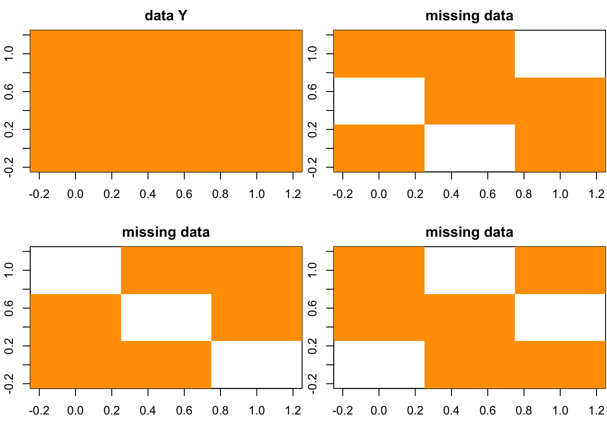

Last updated: 2017-04-25
Code version: 47b328f
let’s write the \(X\) into \(2 \times2\) partitions.
\[X= \begin{pmatrix} X_{00} & X_{01} \\ X_{10} & X_{11} \end{pmatrix}= \left[ \begin{array}{c} U_{0} \\ U_{1} \end{array} \right] \Sigma \left[ \begin{array}{cc} V_{0}^{T}& V_{1}^{T} \end{array} \right] \]
This is one of the old quesitons and I think I would like to keep this question.
we want to find a solution for
\[\begin{eqnarray} &\min_{U,V,\Sigma}& ||X_{01} - U_0 \Sigma V_1^T||_2 + ||X_{10} - U_1 \Sigma V_0^T||_1 \\ &st& ||X_{00} - U_0 \Sigma V_0^T||_2 + ||X_{11} - U_1 \Sigma V_1^T||_1 = 0\\ && U_1 U_1^T + U_0 U_0^T = I \\ & & V_1 V_1^T + V_0 V_0^T = I \end{eqnarray}\]Maybe this is too ambitious? Let’s start from a simple toy example to check if it is possible.
Here we take the simplest example: 2 by 2 matrix \(\begin{pmatrix} a & b \\ c & d \end{pmatrix}\)
In the original BCV frame work, we can use \(||A - B D_k^+C||_F^2\) as objective function.
As I understand here, in the simplest case, \(\begin{pmatrix} a & b \\ c & d \end{pmatrix}\) is \(2 \times 2\) matrix and we assume the this matrix is a rank one matrix to make the determinant equal to zero. So we can use \(a = bd^{-1}c\) to “impute” (or “predict”) the value of \(a\). Thus we can get the solution.
For example, we know the the matrix is \(\begin{pmatrix} a & 3 \\ 2 & 3 \end{pmatrix}\) with rank one, so we know \(a = 2\).
What if we hold out two parts \(b,c\) and once and hold out \(a,b\) in the other time? This goes to two separate problems:
If the matrix looks like \(\begin{pmatrix} 2 & b \\ c & 3 \end{pmatrix}\) with rank one, we actually have more than one solutions.
If the matrix looks like \(\begin{pmatrix} a & 3 \\ 2 & d \end{pmatrix}\) with rank one, we actually have more than one solutions.
When we try to solve the two problems (2.1), (2.2) separately, it seems there is no gain from the hold out pattern.
But what if we solve them together as we discussed previously using Orthogonal Cross Validation (OCV)?
In OCV, we hold out each orthogonal part, and then take the average of MSE of the prediction and the hold out data, we take 3-fold as example:

\[Y = \begin{pmatrix} Y_{11} & Y_{12} & Y_{13} \\ Y_{21} & Y_{22} & Y_{23} \\ Y_{31} & Y_{32} & Y_{33} \end{pmatrix}= \begin{pmatrix} Y_{(1)} & Y_{(2)} & Y_{(3)} \\ Y_{(3)} & Y_{(1)} & Y_{(2)} \\ Y_{(2)} & Y_{(3)} & Y_{(1)} \end{pmatrix}\]
by letting \(Y_{(1)} = \{ Y_{11}, Y_{22} , Y_{33}\}\), \(Y_{(2)} = \{ Y_{12}, Y_{23} , Y_{31}\}\) and \(Y_{(3)} = \{ Y_{13}, Y_{21} , Y_{32}\}\), which are orthogonal to each other.
For each row and column permutation, we calculate the MSE as follows:
\[\begin{eqnarray} MSE &=& MSE_1 + MSE_2 + MSE_3\\ &=& ||\hat{Y}_{(1)} - Y_{(1)}||_F^2 + ||\hat{Y}_{(2)} - Y_{(2)}||_F^2 + ||\hat{Y}_{(3)} - Y_{(3)}||_F^2 \end{eqnarray}\]Let’s go back to 2 by 2 case:
The question is can we get better idea by solving problem (2.1) and (2.2) together (by taking the average of MSE)? It means that we want \(u^*,v^*\) and \(u^{**},v{**}\) to be same. Similarly as the MSE in OCV, we would like use the average (sum) of those two MSE.
So I would guess that the problem goes to:
\[\begin{eqnarray} & & \min_{u,v,\lambda} MSE_1 + MSE_2\\ &s.t.& uu^T = I\\ && v v^T = I \\ && \lambda >0 \\ &where& MSE_1 = ||a - u_0\lambda v_0||_F^2 + ||d - u_1 \lambda v_1||_F^2\\ &and& MSE_2 = ||b - u_0\lambda v_1||_F^2 + ||c - u_1 \lambda v_0||_F^2 \end{eqnarray}\]with assumption the \(\begin{pmatrix} a & b \\ c & d \end{pmatrix}\) is rank one matrix and SVD is as \[\begin{pmatrix} a & b \\ c & d \end{pmatrix} = u\lambda v^T\]
So we can see that SVD solution is the solution of our problem. What’s more, in this simple example, we might be able to find rank two solution which BCV can’t.
In practice, we might get \(u_0^*, v_0^*, u_1^*, v_1^*\) in \(MSE_1\) to predict \(a,d\) and get \(u_0^{**}, v_0^{**}, u_1^{**}, v_1^{**}\) in \(MSE_2\) to predict \(b,c\).
This R Markdown site was created with workflowr